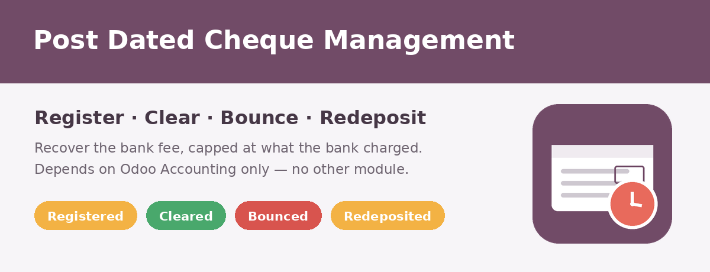
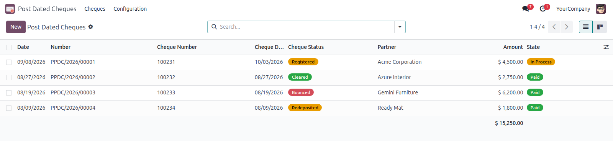
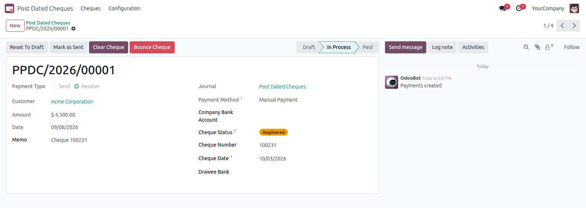
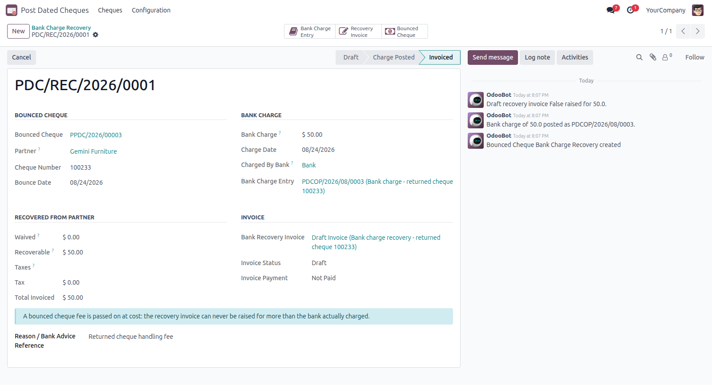
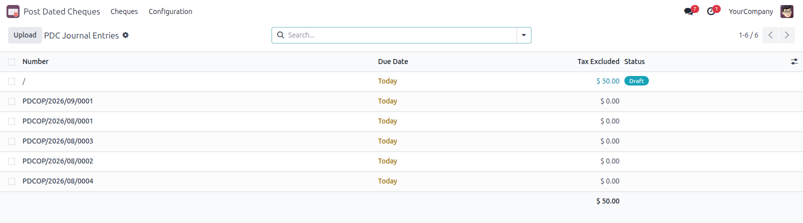
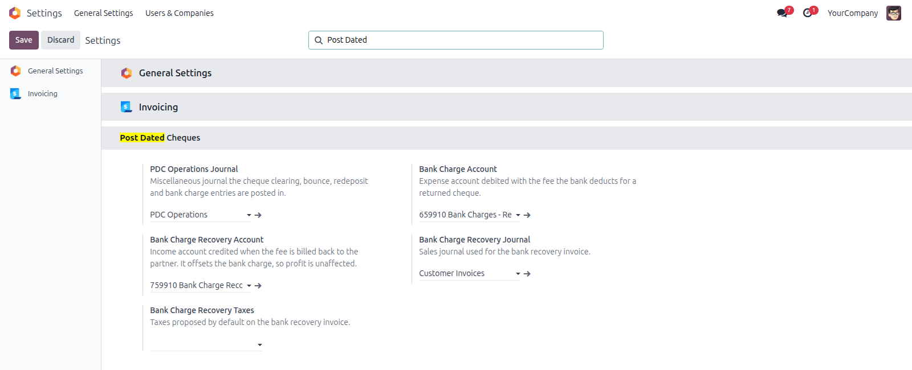

Bouncing asks for the paperwork
The date, the reason the bank gave and the return advice itself. All three end up on the cheque’s chatter, where an auditor can find them.


A post dated cheque is money you have been handed but cannot spend. Booking it straight into the bank overstates your balance; leaving it out of the books entirely loses track of it. This module parks it in a holding account of its own and follows it until the bank decides its fate, posting an ordinary journal entry at every step so the general ledger, the partner ledger and the aged reports all stay right.
It starts from a plain customer or vendor payment. No contract, no lease, no subscription — and the only module it needs is Odoo’s own Accounting.
Record the payment in a journal flagged as a PDC journal. The amount lands in the PDC holding account instead of the bank, and the cheque number, cheque date and drawee bank travel with it.
The bank honoured it. One click moves the value out of the holding account and into the bank account you deposited it in, on the date it actually cleared.
The bank returned it. The balance goes straight back onto the partner, with the reason and the bank’s return advice kept on the record. Redeposit it later if the partner asks — and bounce it a second time if it fails again.
Registered, cleared, bounced or redeposited — the status is on the list, and the amounts add up at the bottom.

The cheque details sit on the payment, and the actions you need are in its header. Nothing new to learn.

The date, the reason the bank gave and the return advice itself. All three end up on the cheque’s chatter, where an auditor can find them.
Clearing, first bounce, redeposit, second bounce — each with the entry it posted, one click away.

When a cheque is returned the bank charges you for it. That fee is booked properly — Dr Bank Charges / Cr Bank — instead of surfacing only during bank reconciliation. Only then can it be billed back to the partner, and the invoice is capped at the fee you actually paid: passing a returned-cheque fee on at a profit is not something the module will let you do. Absorb part of it with a waiver and the invoice drops accordingly; waive all of it and no invoice is raised at all.

Every step posts a normal entry in a journal you choose, tagged with what it is and which cheque it belongs to.

Tick one box on any bank journal, point it at a holding account, and every payment made in it becomes a tracked cheque.

The journal the PDC entries are posted in, the bank charge and recovery accounts, the sales journal for the recovery invoice, and the taxes it carries.

No third party dependency, no external service. Runs on Odoo 19 Community and Enterprise.